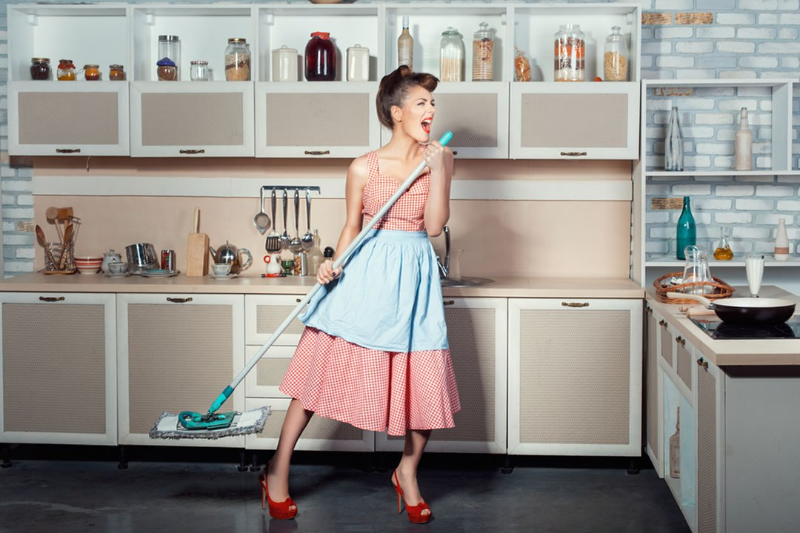
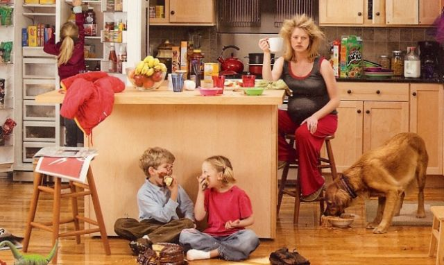
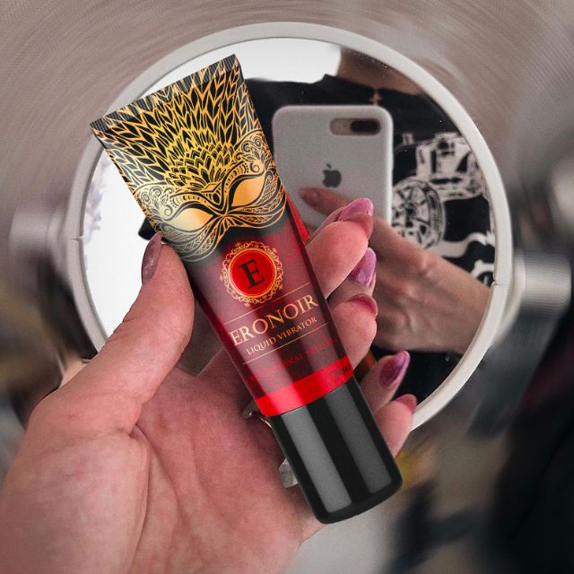

Пару месяцев назад я была стандартной домохозяйкой с кулькой на волосах, которые мылись так редко, что на скопившемся жире вполне можно было жарить яичницу. Жарить, варить, парить, стирать, следить за детьми – это все было про меня. Сейчас это все тоже про меня, только теперь я делаю это с огромным удовольствием. А все потому что нашла удовольствие лично для себя и научилась получать дичайшие оргазмы по щелчку.

Повседневность
Моя жизнь была настолько примитивной и однообразной, что на фоне нее обсуждения бабулек в очереди были захватывающим триллером. Безо всякого энтузиазма я перекатывалась по дому от плиты до детской кроватки, пассивно отращивала бока на слабо привлекательных ягодицах и безэмоционально убирала только что разбитый детьми цветочный горшок.
Рутина, быт, домохозяйство (будь оно неладно!) настолько меня одолели, что я потеряла всякие силы и желания с ними бороться. Злилась, ненавидела свою жизнь, впадала в депрессию и в конечном счете смирилась.

Супружеский долг
Секс с мужем превратился в жалкие попытки проникновения мужнего члена в мою несчастную вагину. Я отмазывалась, как могла, но чаще просто засыпала. Потому что удовольствия от сна я получала значительно больше, чем от секса.
Муж, конечно, жаждал исполнения супружеского долга. Я же была уверена, что сполна расплатилась за плитой. И вообще, последний раз испытывала возбуждение, когда он укладывал младшего. Года два назад.
Серьезный разговор
Как бы ни складывалась семейная жизнь, мы любили друг друга. Об этом пришлось вспомнить, когда муж завел серьезный разговор на тему интима. Высказался, что устал от секса на скорую руку и хочет, чтобы было как раньше.
Я с удовольствием выслушала его откровенный диалог и на грани истерики заявила, что больше вообще не хочу с ним разговаривать. Потом вспомнила, что люблю этого придурка, и пошла мириться. Это был последний день моей скучной жизни.
Влюбленный придурок
После нашего диалога супруг все-таки понял, что я и рада бы трахаться с кроликами наперегонки, да только чтобы возбудиться после тяжелого рабочего дня домохозяйке нужно, как минимум, час качественных прелюдий.
Не будучи совсем дебилом, муж начал действовать, и уже вечером он меня по-настоящему удивил – принес домой жидкий вибратор.
Это такая штука, которая наносится на клитор, половые губы и обеспечивает мощный прилив крови к причинному месту. Сначала это помогает быстрее возбудиться, потом получить феерическое наслаждение.

На мой вопросительно-ошарашенный взгляд супруг с загадочной улыбкой потащил меня в спальню, закрыл дверь и… началось волшебство.
Самый грязный секс в моей жизни
Это уже был не мой муж, а самоуверенный самец, который привычно до меня домагался. Я сжимала губы, придерживая протесты. Он выдавил немного “вибратора” себе на пальцы и проник ими прям во влагалище. Губы разомкнулись на вдохе в томном “ах”. Через мгновение ноги начали слабеть, голова закружилась от накатывающих волнами возбуждения.
Кровь прилила к клитору, он стал дико чувствительным. Муж повалил меня на кровать; напористо и нежно раздвинул мне ноги, провел языком по клитору, поднялся ко мне, продолжив стимулировать разгоряченную вагину пальцами.
Томные вздохи вырывались из ребер, я впервые за долгое время по-настоящему кайфовала. Меня унесло в голубые дали, в голове было приятно пусто, а под бедрами как никогда мокро. За несколько минут я дошла до грани.
Стенки влагалища сжались в приятной истоме, в это время муж вошел в меня и начал трахать. Я стонала, кричала (спасибо шумоизоляции в спальне за эту возможность), кусала его и себя, вообще не отдавая отчет происходящему.
Три резких движения – и я задрожала в оргазмических конвульсиях. Муж сделал небольшую паузу и продолжил – я кончила второй раз! Последний раз такое было еще в студенчестве!
Оргазм за оргазмом накатывали на меня горячими волнами. Я напрягалась до последней мускулы на лице – и растекалась пенистым океаном. Сравнить с чем-то это удовольствие просто невозможно. Мне было так хорошо после этой ночи, что хотелось рассказать об этом всем!
Мне казалась, что эта ночь станет исключением, но муж ввел такой секс за правило. Поначалу он, а потом и я сама наносили Eronoir на клитор и сливались в едином экстазе.
Удовольствие от жизни
После появления Eronoir в нашей жизни многое поменялось. Я заметила, что стала спать меньше, но при этом высыпалась и прекрасно себя чувствовала. У меня появилось настроение, желание мыть волосы и краситься каждый день.
Застиранные фартуки сменились на симпатичные платья формата мини, которые теперь мы с мужем покупали вместе. Удивительнее этого стало только то, что я стала худеть, не занимаясь никакими физическими упражнениями, кроме секса во всех позах и ракурсах.
За месяц такой активной любви я безо всяких усилий сбросила 10, ДЕСЯТЬ КИЛОГРАММОВ! Подруги подозрительно спрашивали про любовника, родители мужа вдруг заметили, как он удачно женился, а я просто была счастлива. Потому что теперь у меня по-настоящему есть все для счастья.
Где достать Eronoir
Если вам знакома больная голова и другие способы избежать секса с мужем, попробуйте Eronoir. От головной боли не спасет, но секс сделает таким феерическим, что вы вообще забудете про голову и вновь влюбитесь в своего избранника. Оставляю ссылку на магазин, где муж покупал жидкий вибратор. Любите себя, любите друг друга!